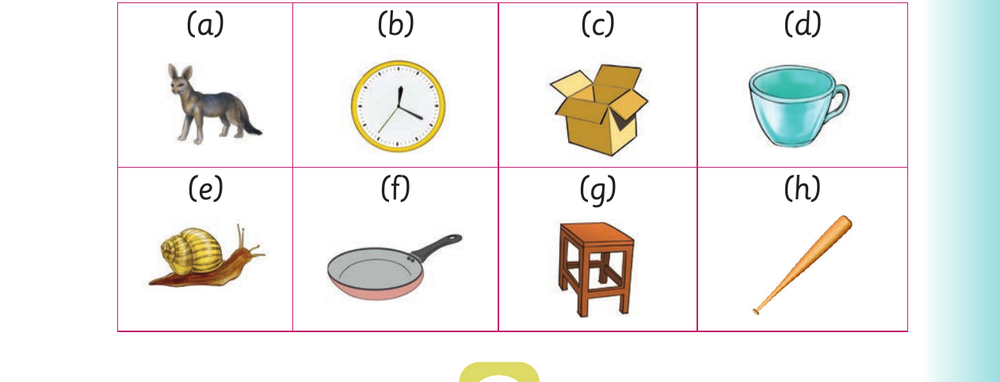

For I add sounds at the beginning of words, panel 1 of 2 presents the source activity with these printed labels and instructions: 1. Pronounce the following words: car lock ox nail tool up at an
1. Pronounce the following words:
car lock ox nail
tool up at an
2. Add a sound at the beginning of each word in (1).
3. Name the following pictures orally:

For I add sounds at the beginning of words, panel 2 of 2 shows this reviewed visual content: Eight labelled pictures show a cat, a clock, a box, a cup, a snail, a pan, a stool and a bat. The printed labels and instructions include: (a) (b) (c) (d) (e) (f) (g) (h)